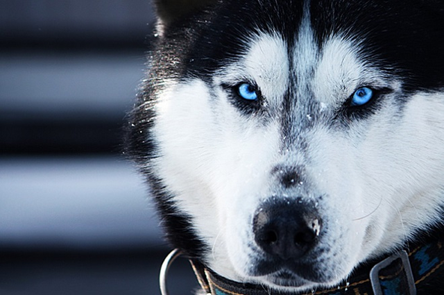

COSTUMES
CONHEÇA ABAIXO 5 COSTUMES DO HUSKY SIBERIANO

- Huskies não podem correr sem trela durante as caminhadas. Eles fogem e também perseguem
outros pequenos animais.
- Um Husky Siberiano que se exercita ficará contente de fazer companhia no sofá, receber carinho ou brincar no tapete. O Husky também tem um lado arteiro: eles podem se tornar incansáveis e destrutivos quando deixados sozinhos por muito tempo.
- Possuem o hábito de lamber o pelo como medida de higiene.
- Podem ser adestrados, porém não assimilam completamente o treinamento.
- Um husky geralmente é teimoso e resmungão, principalmente a receberem ordens.
Ⓒ TODOS OS DIREITOS RESERVADOS Ⓒ